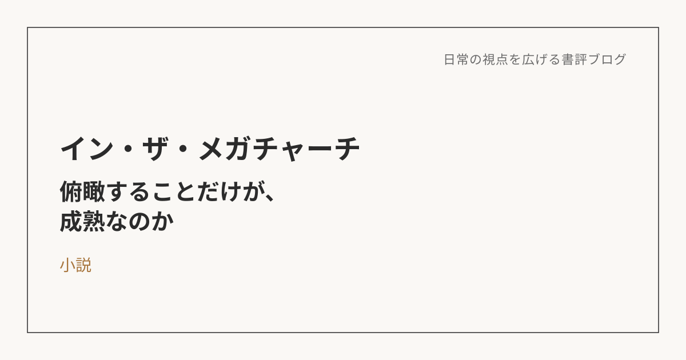

イン・ザ・メガチャーチ――俯瞰することだけが、成熟なのか
この本について
朝井リョウの『イン・ザ・メガチャーチ』は、「推し」への没入というファンダム経済をテーマにした小説だ。読みながら、「推し活」という現象そのものよりも、自分自身が何にどう向き合って生きているかを問われている気がした一冊だった。
「推し」への没入は、混沌とした社会を映す鏡かもしれない
読んで最初に感じたのは、「推し」への愛にのめり込んでいく現象は、どう生きていくべきかという指針が見つからず、混沌としている今の世の中を映す鏡なんじゃないか、ということだった。生きる目的が見えない、自分の軸が定まらない、そういう人ほど、他人である「推し」に自分を委ねやすいんじゃないか。やや偏った見方かもしれないけれど、そう感じてしまった。苦難や不安を抱えているからこそ、何かに頼りたくなる。これは宗教にも通じる構造で、本質的には同じものなんだと思う。
でも、それは自分にも起こりうることだった
ただ、読み進めるうちに、自分の中で見方が反転していった。自分は普段、物事を俯瞰して、一段引いて構造で見ようとするタイプだと思う。でも、日常にモヤモヤを抱えている今だからこそ、あえて視野を狭めて、その環境に自分を委ねて、考えないようにしたい、楽になりたいと思う瞬間が、自分にもあるかもしれない。それは別に、盲目的で自分がない証拠というわけじゃない。むしろ、日常でモヤモヤし続けるくらいなら、視野を狭めて幸せに生きる方が、自分の身の丈に合っているんじゃないか、とすら思えてきた。
自分軸がないのではなく、預け先が違うだけかもしれない
「推しにのめり込む人は自分軸がない」と最初は感じたけれど、これは見方を変えると、自分軸を外部に「外注」しているだけなのかもしれない。仕事、家族、恋愛、国家、宗教、夢、趣味、思想、そして推し。どれも自分の外側にあるものだ。人は完全に自分だけで自分の人生の意味を支えきれるほど強くない。だから何かに自分の意味を預けて生きている。違いがあるとすれば、その預け先が仕事なのか、家族なのか、推しなのか、あるいは俯瞰したり分析したりすること自体なのか、という違いでしかない。自分自身も、「自分の頭で考え続けること」に自分を預けている一人なんだと気づかされた。
視野を広げたり狭めたりできる自由度こそが、成熟かもしれない
視野が広いことは、常に良いことだと無意識に思い込んでいた。でも、視野が広がるほど、単純には信じられなくなる。この感情は本物なのか、自分は何かに依存しているだけじゃないか、社会構造に踊らされているだけじゃないか――そう考え始めると、どこにも安心して着地できなくなる。一方で、何かに没入できることには、疑いを一時停止できる強さがある。「これが好きだ」「この人を応援したい」と思えることには、知性とは別の生命力がある。だとすれば大事なのは、視野を広げる力そのものではなく、必要なときには俯瞰し、生きる喜びのためにはあえて没入もできる、その自由度なんじゃないか。
幸福とは、真実を見ることか、安心して生きられることか
最終的に自分に返ってくるのは、「推し活とは何か」ではなく、自分にとって幸福とは何かという問いだった。真実を見ようとする人は、苦しくても世界を広く見ようとする。安心して生きたい人は、多少視野を狭めてでも、自分を支えてくれる物語を選ぶ。自分はたぶん前者に寄りがちなタイプだ。でも、没入できることは、自分にとって縁遠い力ではなく、自分の中にも確かにある力なんだと、この本を読んで気づかされた。
自分の生活を振り返ってみると、何かを俯瞰したり、構造で理解しようとしたりしている時間は多い一方で、余計なことを考えずに何かへ没頭できている時間は、実はそう多くない気がする。常に一段引いて物事を眺めるクセがついている分、目の前のことにただ夢中になる、という状態から少し遠ざかっているのかもしれない。何にも依存しないことが成熟なのではなく、自分が何にどれくらい依存し、没入できているかを知ったうえで、それを意識的に選べること。それが、この本から持ち帰った一番大きな気づきだった。
※本記事はNotionに書き溜めた読書メモをもとに、AIの編集サポートを受けて構成しています。